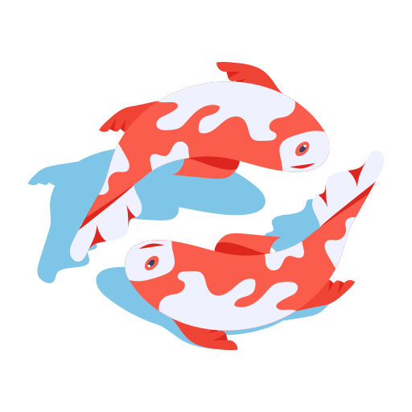

<!DOCTYPE html>
<html lang="en">
<head>
  <meta charset="UTF-8" />
  <meta name="viewport" content="width=device-width, initial-scale=1.0" />
  <title>Hong-Anh Vu</title>
  <link rel="icon" href="assets/fish_logo.png" type="image/png" />

  <!-- font: IBM Plex Mono -->
  <link rel="preconnect" href="https://fonts.googleapis.com" />
  <link rel="preconnect" href="https://fonts.gstatic.com" crossorigin />
  <link
    href="https://fonts.googleapis.com/css2?family=VT323&display=swap"
    rel="stylesheet"
  />

  <!-- css -->
  <link rel="stylesheet" href="css/reset.css" />
  <link rel="stylesheet" href="css/variables.css" />
  <link rel="stylesheet" href="css/layout.css" />
  <link rel="stylesheet" href="css/background.css" />
  <link rel="stylesheet" href="css/icon.css" />
  <link rel="stylesheet" href="css/window.css" />
  <link rel="stylesheet" href="css/taskbar.css" />
</head>
<body>
  <!-- layer 1: etch-a-sketch background grid -->
  <div id="background" class="layer layer--background"></div>

  <!-- layer 2: desktop icons -->
  <div id="desktop" class="layer layer--desktop">
   
  </div>

  <!-- layer 3: window layer -->
  <div id="windows" class="layer layer--windows">
    
  </div>

  <!-- layer 4: bottom taskbar -->
  <footer id="taskbar" class="taskbar">
    <button class="taskbar__start">
      
      <span class="taskbar__start-label">start</span>
    </button>
    <div class="taskbar__tabs"></div>
    <span class="taskbar__clock"></span>
  </footer>

  <script data-goatcounter="https://honganh.goatcounter.com/count"
          async src="//gc.zgo.at/count.js"></script>
  <script type="module" src="js/main.js"></script>
</body>
</html>
